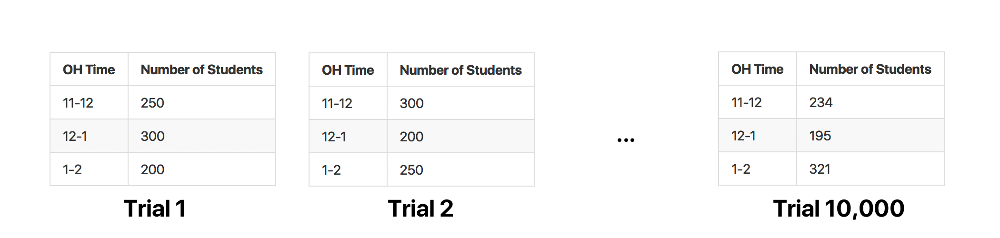

Preface
I totally butchered the lab problem regarding total variation distance, and after I managed to save myself with a half-decent explanation, I decided to write this up to clear any doubts. In this walkthrough, we'll take a look at a hypothesis testing situation whose test statistic is the total variation distance (this problem was taken directly from the TVD discussion worksheet in Fall 2017). We'll also implement the hypothesis test in Python, and look at the results.
This is how the problem was worded in the discussion worksheet.
As a student fed up with wait times at office hours, you scout out the number of people in office hours from 11-12, 12-1, and 1-2, with the hope of figuring out which has the fewest number of people. You see the following number of students in B6 Evans:
| OH Time | Number of Students |
|---|---|
| 11-12 | 250 |
| 12-1 | 300 |
| 1-2 | 200 |
You see that 1-2 has the fewest number of people and wonder if that’s the best time to come. Being a cunning Data 8 student, you wonder whether or not these differences might just be due to chance.
We will now go over how to use the concept of total variation distance to run a hypothesis test on this situation.
From the course textbook, total variation distance is used to quantify how different two categorical distributions are. In our case, the "categories" are the times 11-12, 12-1 and 1-2. Note that total variation distance is only valid for proportions, i.e. fractions between 0 and 1.
The definition of total variation distance for two categorical distributions
In terms of code, this is:
def tvd(a, b):# Assumes a, b are numpy arraysreturn sum(abs(a-b))/2
We'll look at a concrete example of this in just a minute, so don't worry if the formula doesn't make a whole lot of sense.
As with all hypothesis tests, we need hypotheses. In this case, a fitting null hypothesis is that the number of students at each of the three office hour slots is distributed uniformly at random – i.e., there is a
A fitting alternative hypothesis that the total variation distance sets us up to calculate is that the number of students in each office hour slot is not distributed randomly at uniform. That's all we can say.
Let's call tvd_observed the total variation distance between our observed distribution and the null distribution. More specifically:
null_distribution = make_array(1/3, 1/3, 1/3)observed_distribution = make_array(250/750, 300/750, 200/750)tvd_observed = tvd(null_distribution, observed_distribution)
Notice that we were able to find the observed distribution by taking the number of students in each OH slot and dividing by the total number of students (750). If we wanted to calculate the TVD by hand, we'd compute the following:
Now, the p-value that we will simulate for is the probability of seeing a TVD greater than or equal to tvd_observed. After all, we're searching for the probability of seeing something as or more extreme than the observed, assuming the null hypothesis is true. For the sake of our sample, we are assuming the null hypothesis is true – we're going to sample from null_distribution.
On each of our num_trials trials, we'll draw from the null distribution 750 times.

From there, for each trial, we can find the sample TVD. This will give us a list of num_trials TVDs, each of which we can compare to tvd_observed. From there, we can calculate our p_value and decide what to do with the null hypothesis. Let's do it!
For your convenience, I've placed all code necessary for this simulation in the block below, even if it was already defined above. You can follow along by copying everything below into a new Jupyter notebook cell.
from datascience import *import numpy as npdef tvd(a, b):# Assumes a, b are numpy arraysreturn sum(abs(a-b))/2null_distribution = make_array(1/3, 1/3, 1/3)observed_distribution = make_array(250/750, 300/750, 200/750)observed_tvd = tvd(null_distribution, observed_distribution)oh_slots = ["11-12", "12-1", "1-2"]num_trials = 10000sampled_tvds = make_array()for i in np.arange(num_trials):students = np.random.choice(oh_slots, 750) # Samples uniformly at random from oh_slots 750 times# Note that np.count_nonzero(students == "x-y") is some number between 0 and 750eleven_twelve = np.count_nonzero(students == "11-12")/750twelve_one = np.count_nonzero(students == "12-1")/750one_two = np.count_nonzero(students == "1-2")/750# Finds the distribution of the current samplecurrent_distribution = make_array(eleven_twelve, twelve_one, one_two)# Finds the TVD of the current sample and the null distribution – this is our test statisticcurrent_tvd = tvd(current_distribution, null_distribution)# Adds the current TVD to the list of all sampled TVDssampled_tvds = np.append(sampled_tvds, current_tvd)# sampled_tvds is now an array with num_trials (10000) elements, each of which is a TVD of a sample# We now need to count the number of times these sampled TVDs were >= observed_tvd, and divide by num_trialsp_value = np.count_nonzero(sampled_tvds >= observed_tvd) / num_trials
After the for loop, we were left with the array sampled_tvds, which contained 10000 elements – one TVD for each of the 10000 trials. We then find our p-value by finding the number of times the sampled TVD was "as or more extreme than the observed TVD", i.e. greater than equal to observed_tvd, and dividing this by num_trials. Upon doing so, we yield:
This means that the probability of seeing the observed distribution of students in office hours – the original table provided in the question – assuming that the null is true is
This means that we can conclude that the distribution of students in each office hour time slot isn't uniformly at random – i.e., the students don't appear in office hours following the distribution